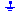
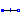
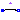
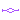
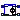
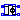

Basic electrical components
This Package contains the basic components of the SPICE3 models. The first letter of the
name of the component shows the SPICE name, e.g., R_Resistor: R is the SPICE-name of the component
resistor which is used in SPICE-Netlists.
Extends from Modelica.Icons.Package (Icon for standard packages).
| Name | Description |
|---|---|
|  Ground | Ground node |
| Ideal linear electrical resistor | |
|  C_Capacitor | Ideal linear electrical capacitor |
|  L_Inductor | Ideal linear electrical inductor |
|  K_CoupledInductors | Inductive coupling via coupling factor K |
|  E_VCV | Linear voltage-controlled voltage source |
| G_VCC | Linear voltage-controlled current source |
|  H_CCV | Linear current-controlled voltage source |
| F_CCC | Linear current-controlled current source |
Ground node
Ground of an electrical circuit. The potential at the ground node is zero. Every electrical circuit has to contain at least one ground object.
SPICE does not have an element for the ground node (mass). In SPICE netlists the ground is specified by the node number 0. This Modelica SPICE library demands to describe the ground node by this ground element.
| Name | Description |
|---|---|
| p | Ground pin |
 Modelica.Electrical.Spice3.Basic.R_Resistor
Modelica.Electrical.Spice3.Basic.R_ResistorIdeal linear electrical resistor
The linear resistor connects the branch voltage v with the branch current i by i*R = v. The Resistance R is allowed to be positive, zero, or negative.
Extends from Modelica.Electrical.Analog.Interfaces.OnePort (Component with two electrical pins p and n and current i from p to n).
| Name | Description |
|---|---|
| R | Resistance [Ohm] |
| Name | Description |
|---|---|
| p | Positive pin (potential p.v > n.v for positive voltage drop v) |
| n | Negative pin |
Ideal linear electrical capacitor
The linear capacitor connects the branch voltage v with the branch current i by i = C * dv/dt. The Capacitance C is allowed to be positive, zero, or negative.
Extends from Modelica.Electrical.Analog.Interfaces.OnePort (Component with two electrical pins p and n and current i from p to n).
| Name | Description |
|---|---|
| C | Capacitance [F] |
| IC | Initial value [V] |
| UIC | Use initial conditions: true, if initial condition is used |
| Name | Description |
|---|---|
| p | Positive pin (potential p.v > n.v for positive voltage drop v) |
| n | Negative pin |
Ideal linear electrical inductor
The linear inductor connects the branch voltage v with the branch current i by v = L * di/dt. The inductance L is allowed to be positive, zero, or negative.
Extends from Modelica.Electrical.Analog.Interfaces.OnePort (Component with two electrical pins p and n and current i from p to n).
| Name | Description |
|---|---|
| L | Inductance [H] |
| IC | Initial value; used, if UIC is true [A] |
| UIC | Use initial conditions |
| Name | Description |
|---|---|
| p | Positive pin (potential p.v > n.v for positive voltage drop v) |
| n | Negative pin |
| ICP | Pin to couple inductances via K |
Inductive coupling via coupling factor K
K_CoupledInductors is a component that allows the coupling of two inductors.
K is the coefficient of coupling which must be greater than or equal to zero and less than one.
The usage is demonstrated in the example CoupledInductors.
| Name | Description |
|---|---|
| k | Coupling Factor |
| Name | Description |
|---|---|
| inductiveCouplePin1 | Couple pin for inductances |
| inductiveCouplePin2 | Couple pin for inductances |
Linear voltage-controlled voltage source
The linear voltage-controlled voltage source is a TwoPort. The right port voltage at pin p2 (=p2.v) is controlled by the left port voltage at pin p1 (=p1.v) via
p2.v = p1.v * gain.
The left port current is zero. Any voltage gain can be chosen.
The corresponding SPICE description
Ename N+ N- NC+ NC- VALUE
is translated to Modelica:
Ename -> Spice3.Basic.E_VCV Ename
(Ename is the name of the Modelica instance)
N+ -> p2.v
N- -> n2.v
NC+ -> p1.v
NC- -> n1.v
VALUE -> gain
Extends from Interfaces.TwoPortControlledSources (Component with two electrical ports, including current).
| Name | Description |
|---|---|
| gain | Voltage gain |
| Name | Description |
|---|---|
| p1 | Positive pin of the controlling port |
| n1 | Negative pin of the controlling port |
| p2 | Positive pin of the controlled port |
| n2 | Negative pin of the controlled port |
Linear voltage-controlled current source
The linear voltage-controlled current source is a TwoPort. The right port current at pin p2 (=p2.i) is controlled by the left port voltage at pin p1 (p1.v) via
p2.i = p1.v * transConductance.
The left port current is zero. Any transConductance can be chosen.
The corresponding SPICE description
Gname N+ N- NC+ NC- VALUE
is translated to Modelica:
Gname -> Spice3.Basic.G_VCC Gname
(Gname is the name of the Modelica instance)
N+ -> p2.i
N- -> n2.i
NC+ -> p1 .v
NC- -> n1.v
VALUE -> transConductance
Extends from Interfaces.TwoPortControlledSources (Component with two electrical ports, including current).
| Name | Description |
|---|---|
| transConductance | Transconductance [S] |
| Name | Description |
|---|---|
| p1 | Positive pin of the controlling port |
| n1 | Negative pin of the controlling port |
| p2 | Positive pin of the controlled port |
| n2 | Negative pin of the controlled port |
 Modelica.Electrical.Spice3.Basic.H_CCV
Modelica.Electrical.Spice3.Basic.H_CCVLinear current-controlled voltage source
The linear current-controlled voltage source is a TwoPort. The "right" port voltage at pin 2 (=p2.v) is controlled by the "left" port current at pin p1(=p1.i) via
p2.v = p1.i * transResistance.
The controlling port voltage is zero. Any transResistance can be chosen.
The corresponding SPICE description
Hname N+ N- VNAM VALUE
is translated to Modelica:
Hname -> Spice3.Basic.H_CCV Hname
(Hname is the name of the Modelica instance)
N+ -> p2.v
N- -> n2.v
The voltage source VNAM has the two nodes NV+ and NV-:
VNAM VN+ VN- VALUE_V
The current through VNAM hast to be led through the CCV.
Therefore VNAM has to be disconnected and an additional
node NV_AD has to be added.
NV_AD -> p1.i
NV- -> n1.i
On this way the current, that flows through the voltage source VNAM, flows through the CCV.
VALUE -> transResistance
Extends from Interfaces.TwoPortControlledSources (Component with two electrical ports, including current).
| Name | Description |
|---|---|
| transResistance | Transresistance [Ohm] |
| Name | Description |
|---|---|
| p1 | Positive pin of the controlling port |
| n1 | Negative pin of the controlling port |
| p2 | Positive pin of the controlled port |
| n2 | Negative pin of the controlled port |
Linear current-controlled current source
The linear current-controlled current source is a TwoPort. The "right" port current at pin 2 (=p2.i) is controlled by the "left" port current at pin p1(=p1.i) via
p2.i = p1.i * gain.
The controlling port voltage is zero. Any current gain can be chosen.
The corresponding SPICE description
Fname N+ N- VNAM VALUE
is translated to Modelica:
Fname -> Spice3.Basic.F_CCC Fname
(Fname is the name of the Modelica instance)
N+ -> p2.i
N- -> n2.i
The voltage source VNAM has the two nodes NV+ and NV-:
VNAM NV+ NV- VALUE_V
The current through VNAM hast to be led through the CCC.
Therefore VNAM has to be disconnected and an additional
node NV_AD has to be added.
NV_AD -> p1.i
NV- -> n1.i
On this way the current, that flows through the voltage source VNAM, flows through the CCC.
VALUE -> gain
Extends from Interfaces.TwoPortControlledSources (Component with two electrical ports, including current).
| Name | Description |
|---|---|
| gain | Current gain |
| Name | Description |
|---|---|
| p1 | Positive pin of the controlling port |
| n1 | Negative pin of the controlling port |
| p2 | Positive pin of the controlled port |
| n2 | Negative pin of the controlled port |